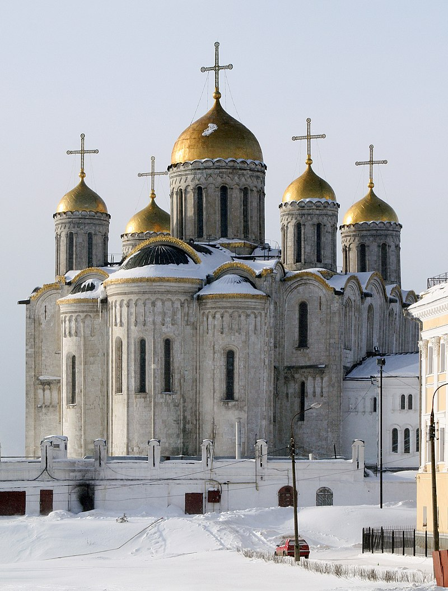
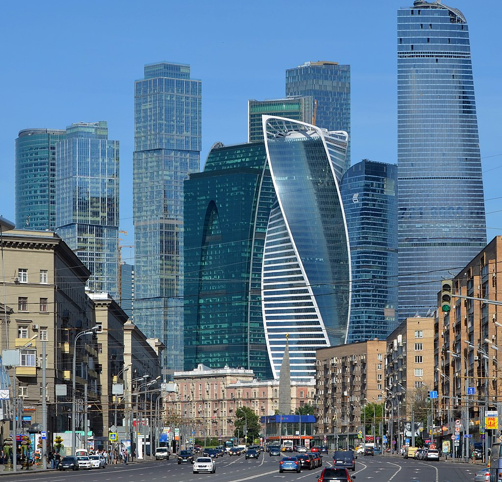

Arquitectura:
Para mas informacion vea Arquitectura de Rusia.
La arquitectura de Rusia es una rica amalgama de estilos y tradiciones que reflejan la vasta y compleja historia del país. Desde las primitivas iglesias de madera en los bosques del norte hasta los monumentales rascacielos de la era soviética, la arquitectura rusa ha evolucionado en respuesta a cambios políticos, culturales y tecnológicos.
La Arquitectura Medieval y de la Rus de Kiev:Los primeros ejemplos de arquitectura rusa se remontan a la Rus de Kiev (siglos IX-XIII). Influenciados por el arte bizantino, los arquitectos rusos construyeron iglesias y monasterios con cúpulas doradas y frescos elaborados. La Catedral de Santa Sofía en Kiev, construida en el siglo XI, es un testimonio de esta influencia, con su diseño cruciforme y sus cúpulas prominentes. Este período también vio el desarrollo de la arquitectura en madera, especialmente en las regiones del norte, donde los artesanos crearon iglesias y viviendas robustas y ornamentadas, muchas de las cuales han perdurado hasta hoy en forma de museos al aire libre. |
 |
La Arquitectura del Principado de Moscú y el Renacimiento Ruso:
Con el ascenso del Principado de Moscú en el siglo XIV, la arquitectura rusa comenzó a desarrollar características distintivas. Las iglesias de piedra reemplazaron gradualmente a las de madera, y el Kremlin de Moscú se convirtió en un símbolo del poder emergente de la ciudad. La Catedral de la Asunción en el Kremlin, construida en el siglo XV por arquitectos italianos bajo la dirección de Aristóteles Fioravanti, combina elementos rusos e italianos, señalando el inicio de una nueva era en la arquitectura rusa.
La Era de Pedro el Grande y la Influencia Occidental:
El siglo XVIII trajo consigo la influencia occidental, especialmente bajo el reinado de Pedro el Grande. Fundó San Petersburgo en 1703 como la nueva capital y ventana de Rusia hacia Europa. Arquitectos europeos como Domenico Trezzini y Bartolomeo Rastrelli fueron invitados a diseñar edificios en estilos barroco y neoclásico. El Palacio de Invierno y la Catedral de San Isaac en San Petersburgo son ejemplos emblemáticos de este período, con sus grandiosos diseños y ornamentación opulenta.
El Clasicismo y la Era Imperial:
El clasicismo continuó dominando la arquitectura rusa durante el siglo XIX. La capital, San Petersburgo, se convirtió en un museo al aire libre de la arquitectura neoclásica con edificios como el Almirantazgo y el Teatro Mariinsky. En Moscú, la Catedral de Cristo Salvador, reconstruida después de ser destruida en la era soviética, es un símbolo de la grandiosidad imperial. Durante esta época, las residencias de la nobleza y la burguesía urbana adoptaron estilos europeos, reflejando la modernización y occidentalización de la sociedad rusa.
La Revolución Soviética y el Constructivismo:
La Revolución de 1917 marcó el inicio de una nueva era en la arquitectura rusa, con la promoción de estilos radicales que reflejaban los ideales de la revolución. El constructivismo, caracterizado por formas geométricas y funcionales, se convirtió en el estilo dominante durante las primeras décadas del régimen soviético. Edificios como la Torre Shújov y la Casa Melnikov en Moscú son ejemplos notables de este movimiento. La arquitectura constructivista buscaba romper con el pasado y representar el nuevo orden socialista.
El Realismo Socialista y la Arquitectura Estalinista:
Durante el gobierno de Josef Stalin (1924-1953), la arquitectura rusa experimentó otro cambio significativo hacia el realismo socialista. Este estilo combinaba la monumentalidad clásica con elementos de la cultura rusa para glorificar el estado soviético. Los "rascacielos estalinistas" o "siete hermanas" en Moscú, construidos en la década de 1950, son ejemplos icónicos, caracterizados por sus torres altas y ornamentadas. El metro de Moscú, con sus estaciones lujosamente decoradas, es otro testimonio del enfoque monumental de esta época.
|  |
La Arquitectura Moderna y Contemporánea:Después de la muerte de Stalin, la arquitectura soviética se movió hacia diseños más funcionales y menos ornamentados. La era de Khrushchev (1953-1964) vio la construcción masiva de edificios residenciales prefabricados conocidos como "Khrushchyovkas", que buscaban resolver la crisis de vivienda post-guerra. Con la disolución de la URSS en 1991, Rusia experimentó una explosión de diversidad arquitectónica, con la incorporación de estilos internacionales y el redescubrimiento de la herencia histórica. Hoy en día, la arquitectura en Rusia es un reflejo de su rica historia y de las influencias globales. Ciudades como Moscú y San Petersburgo combinan la grandiosidad imperial, los experimentos soviéticos y las innovaciones modernas. Proyectos como el Centro Internacional de Negocios de Moscú (Moscow City) y la restauración de monumentos históricos demuestran un continuo diálogo entre el pasado y el presente, y un futuro prometedor para la arquitectura rusa. |